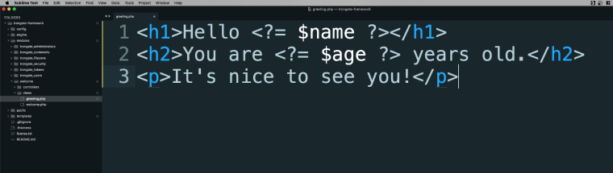
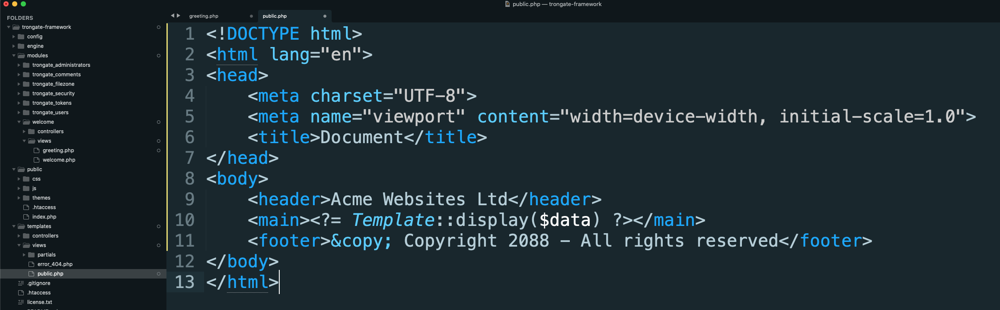

Let's assume that you have an ordinary view file inside a module. We'll assume that our view file is called greeting.php and that it accepts a 'name' value as well as an 'age' value, from a greeting() method.
This means that our greeting method may look like this:
function greeting() {
$data["name"] = "John";
$data["age"] = 21;
$this->view("greeting", $data);
}
As for our view file? It might contain some simple HTML that may echo (display) our two variables. For example:

Everything we've done here displays a view file and should work without any problems. However, if you'd like to have your entire view file displayed within a page template then this can be easily be achieved by following this simple two step process:
STEP 1: On your 'greeting' method, replace the line that loads the view file with three lines. These three lines should:
The first line should declare a 'view_module' property and should be set to the directory name of your module. For example,
$data["view_module"] = "welcome";The second line, 'view_file', should declare the name of your view file. For example:
$data["view_file"] = "greeting";The third line should load your template, using Trongate's in-built template() method. This method accepts two arguments:
For example,
$this->template("public", $data);So, your complete greeting() method should now look like this:
function greeting() {
$data["name"] = "John";
$data["age"] = 21;
$data["view_module"] = "welcome"]
$data["view_file"] = "greeting";
$this->template("public", $data);
}
STEP 2: Now, open your template view file (public.php). Go to the area where you'd like your view file to be inserted and add the following line of code:
<?= Template::display($data) ?>If you've followed along, then your template view file might look something like this:

Refresh your browser and you should now see your template appearing with your module's view file inside the template.